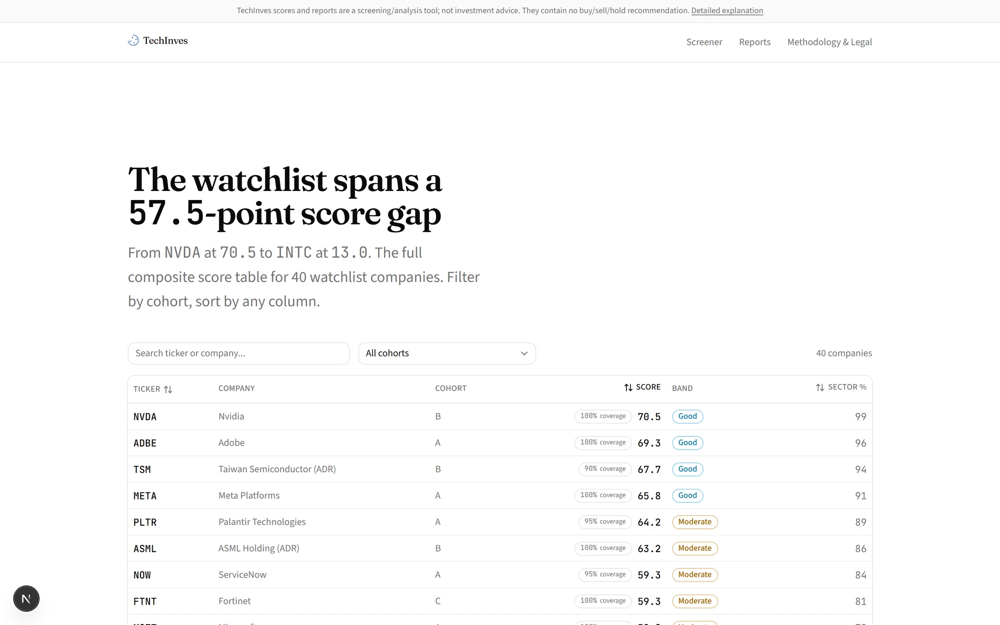

İş 03 / 04 · Duraklatıldı
TechInves
ABD borsasındaki teknoloji şirketlerini yalnızca kendi benzerleriyle karşılaştırarak puanlayan bir hesap motoru ve bu puanların üstüne yazılan, açılmadan önce kurallarla denetlenen bir araştırma raporu hattı.
Kısaca
- Problem
- Bir şirketin finansal sayısı tek başına bir şey söylemiyor: yüzde otuz kâr marjının yüksek olup olmadığı, şirketin ne iş yaptığına bağlı. Puanı doğrudan bir dil modelinden istemek ise sayının nereden geldiğini açıklanamaz hâle getiriyor.
- Kullanıcı için değişen
- Her şirket yalnızca kendi grubunun içinde, aynı veriyle her seferinde aynı sonucu veren bir hesapla 0–100 arasında puanlanıyor. Puanların üstüne yazılan araştırma raporu ise açılmadan önce kurallardan geçiyor; kusurluysa kusuru üstünde yazılı olarak açılıyor.
- Bunu mümkün kılan karar
- Puanlama katmanında tek bir model çağrısı yok. Model yalnızca anlatıyı yazıyor ve yazdığı hiçbir şey kural denetiminden geçmeden rapora girmiyor; ikinci bir modelin verdiği not kararı yalnızca yukarı çekebiliyor, aşağı çekemiyor.
- Kanıt
- Puanlama katmanındaki model çağrısı sayısı sıfır. Listedeki 40 şirketin tamamı canlı veriyle çözülüyor, şirket başına iki istekle. Testlerin hiçbiri ağa çıkmıyor. Rapor kararının dört seviyesi de saklanıyor ve gösteriliyor.
Ürünün yüzü
Arayüzden görüntüler
01 / 05

Şirket tarayıcısıKırk şirketin kendi karşılaştırma grubu içinde sıralandığı puan tablosu.
{kind=link}
{kind=link}
{kind=link}
{kind=link}
{kind=link}
Teknik derinlik
Buradan sonrası mimari ayrıntı: iç adlar, eşikler, durum değerleri, modül yolları ve ayrıntılı ölçümler. Yukarıdaki özet tek başına okunduğunda proje anlaşılır.
Problem
Bir şirketin finansal sayıları tek başına bir şey söylemiyor: 45'lik bir brüt marj bir yazılım şirketinde kötü, bir donanım şirketinde iyi. Karşılaştırma akranlarla yapılmalı. Öte yandan haber akışı, sayılara bakmadan anlatı üretiyor.
TechInves ikisini de yapıyor ama birbirine karıştırmıyor: puanlama katmanı tamamen deterministik ve LLM'siz, rapor katmanı LLM'li ama yazdığı hiçbir şey kural denetiminden geçmeden yayımlanmıyor.
Kurucu kararlar
Puanlamada tek bir LLM çağrısı yok
Skor doğrudan veriden hesaplanıyor. Şirket temelleri SEC EDGAR'ın XBRL
companyfacts API'sinden, hisse fiyatı ve piyasa değeri Financial Modeling
Prep'in ücretsiz profile uç noktasından geliyor. Puan, model görüşü değil,
aritmetik.
Yüzdelik sıralama kohort içindedir
Her şirket kendi kohortu içinde 0–100 arasında puanlanıyor: Software &
Internet (A), Hardware & Semiconductors (B), IT Services (C). Bu, tek bir
ticker'ı puanlamanın bile bütün kohortun ham verisini çekmeyi gerektirmesi
demek — yüzdelik normalleştirme, kohort geneli bir işlem. score --ticker tek
bir şirketi göstermenin kolaylığı; kohort genelindeki hesabı atlamanın yolu
değil.
Bir kohort minimum boyutun altına düşerse, kalan en büyük gruba yinelemeli olarak
birleştiriliyor ("genişletilmiş kohort") ve o gruptaki her ticker
extended=True işaretini taşıyor.
Veri boşluğu, ölçülmüş bir başarısızlık değildir
Sistemin en dikkatli tasarım kararı bu. Hesaplanamayan bir metrik 0.0 olarak
geçmiyor — None oluyor ve ağırlığı kategori içinde yeniden dağıtılıyor. Aynısı
bir seviye yukarıda da geçerli: hiçbir metriği hesaplanamayan bir kategori
score=None alıyor ve bileşik skordan dışlanıp kalan ağırlıklar yeniden
ölçekleniyor.
0.0meşru bir skordur — kohortun dibi, her metrikte. Verinin yokluğu başka bir olgudur ve başka bir değer alır.
Hiçbir kategori hesaplanamadıysa bileşik skor None ve bandı "Very Weak" değil,
"No Data". Bu ayrım bilerek yapıldı.
Aynı ilkenin bir başka görünümü: bir metrik, kohortta tanımlı değeri olan en az iki üye yoksa yüzdelik sıralamaya sokulmuyor. Tek üyeyle ortalama-sıra yüzdeliği her zaman tam olarak 50,0 çıkar — bu bir ölçüm değil, istatistiksel bir yozlaşma, ve "nötr 50 atanmaz" kuralı tam da bunu yasaklıyor.
Rejim, metrik setini değiştirir
GAAP faaliyet karı son dört çeyrektir negatifse şirket "kârsız büyüme" rejimine atanıyor ve risk skorundaki ağırlıkların %40'ı yer değiştiriyor: kaldıraç ve faiz karşılama yerine nakit ömrü ve burn multiple. Yeterli çeyreklik geçmiş yoksa (yeni halka arz gibi) tahmin yürütülmüyor, en son yıllık faaliyet karına düşülüyor.
Rapor hattı sabit ve denetlenebilir bir iş akışıdır
Model hangi aracın çağrılacağına karar vermiyor. Arama sağlayıcıları Python'dan doğrudan, önceden belirlenmiş bir sırayla çağrılıyor; model yalnızca çıkarım, yargı ve anlatı yazımı gereken adımlarda devreye giriyor. Bir araştırma dalındaki tek döngü, başarısız bir ağ çağrısını yeniden deniyor; iş akışının yönünü model değiştirmiyor.
Pahalı olan her şey grafik çağrılmadan önce kararlaştırılır
Öne çıkan şirket seçimi, skorlar ve makro omurga grafiğe girdi olarak veriliyor, yani yayılma genişliği ilk dal başlamadan önce sabit. Düşük maliyetli bir ön eleme izleme listesini sıralayıp 3–4 öne çıkan şirketi seçiyor; bu yüzden sitenin gösterdiği iki seçim — öne çıkan rozetleri ve derin inceleme bölümleri — sonradan uzlaştırmayla değil, inşa gereği birbiriyle uyumlu.
Dayanak tespit edilmez, yapısaldır
Yazar model asla URL üretmiyor. [S3] biçiminde işaretler bırakıyor ve
deterministik bir genişletme bunları, istemde listelenen aynı kapalı kelime
dağarcığından bağlantılara çeviriyor. Uydurulmuş bir kimlik hiçbir şeye
genişliyor ve doğrulayıcıya kanıt olarak raporlanıyor — atıf kapısının temizlenmiş
taslağı değil, temizlenmeden önceki taslağı okumasının sebebi bu.
Deterministik olan hiçbir şey modelden istenmez
İzleme listesi tablosu, çitlenmiş skor bloğu, makro omurga, öne çıkanların giriş cümlesi ve sıfır-verim kapsama notu — hepsi koddan, veriden render ediliyor. Modele tek bir iş bırakılıyor: eline verilen bulgular üzerine anlatı yazmak.
Eksik veri açıkça görünür kalır
Eksik bir isteğe bağlı anahtar (FRED_API_KEY, EXA_API_KEY) bir ayağı atlıyor
ve bunu söylüyor; eksik bir zorunlu anahtar tetikleyiciyi adını vererek
reddediyor. Eksik skor verisi açık bir gerekçeyle render ediliyor, asla atlanmıyor
ya da aradeğerlenmiyor.
Bunun kurulumdaki karşılığı demo modu: hiçbir API anahtarı olmadan üç komutla tamamen dolu, gezilebilir bir site ayağa kalkıyor — beş örnek rapor (doğrulayıcının bütün karar aralığını kapsıyor), 40 örnek şirket skoru. Her sayfanın üstündeki bir bant bunu açıkça söylüyor ve üç çalıştırma tetikleyicisi görünür biçimde devre dışı, her biri eksik olan anahtarı adıyla söylüyor.
Nasıl çalışır
İki katman, veritabanında buluşuyor
SEC EDGAR (XBRL companyfacts) + FMP (profile)
│
┌─────────────────────────┴──────────────────────────┐
▼ ▼
PUANLAMA HATTI (deterministik, LLM'siz) RAPOR HATTI (LangGraph, talep üzerine)
winsorize → yön düzeltme → yüzdelik ucuz sonda → 3-4 öne çıkan seçilir
→ kategori ağırlıkları → bileşik skor → araştırma dalları (13-14) yayılır
→ risk alt skoru → sıkıntı tavanı → sentez (tek taslak)
│ → doğrulayıcı (kural + LLM hakem)
▼ ▼
Skor · doğrudan veriden pass / pass_with_flags /
degraded_publish / block
pipeline, techinves'i import ediyor; bağımlılık asla ters yöne akmıyor.
Puanlama, adım adım
Sıra önemli ve metodoloji belgesinin kendi adımlarını yansıtıyor:
- Winsorize — ham değerler kendi orijinal birimlerinde, kohortun [%2,5, %97,5] yüzdelik aralığına kırpılıyor. Tanımsız değerler dışlanıyor, asla 0'a kırpılmıyor.
- Yön düzeltme — düşük-daha-iyi metrikler negatifleniyor, böylece "daha yüksek yüzdelik = her zaman daha iyi" tek kural hâline geliyor.
- Yüzdelik sıralama — ortalama-sıra yüzdeliği:
(küçük olanlar + 0,5 × eşit olanlar) / n × 100. - Kategori skoru — kategori içinde ağırlıklı toplam; hesaplanamayan metriklerin ağırlığı, hesaplanabilenler arasında yeniden dağıtılıyor.
- Bileşik skor — kategori skorlarının, gerçekten skoru olan kategoriler üzerinde yeniden normalleştirilmiş ağırlıklı toplamı.
Kohort başına kategori ağırlıkları farklı — kohortun ne olduğu, neyin önemli olduğunu değiştiriyor:
| Kohort | quality | growth | valuation | financial health |
|---|---|---|---|---|
| A · Software & Internet | 0,30 | 0,30 | 0,20 | 0,20 |
| B · Hardware & Semiconductors | 0,35 | 0,20 | 0,25 | 0,20 |
| C · IT Services & Infrastructure | 0,30 | 0,25 | 0,25 | 0,20 |
Risk ayrı bir skor, bileşiğin içinde değil. Üç bileşen iki rejimde de ortak — Altman-Z (0,30), Piotroski-F (0,20), seyrelme (0,10) — kalan %40 rejime bağlı: kârlı şirketlerde net borç/EBITDA ve faiz karşılama (0,20 + 0,20), kârsız büyüme rejiminde nakit ömrü ve burn multiple.
Bunun üstünde bir sıkıntı tavanı var: belirli eşiklerin (faiz karşılama < 2,0, Altman-Z < 1,1, nakit ömrü < 12 ay) altındaki bir şirketin bileşik skoru 70'i geçemiyor. Bant eşikleri: 80+ Strong, 65+ Good, 45+ Moderate, 30+ Weak, altı Very Weak — ve hesaplanamayan bir skor için "No Data".
Veri kapsamı ayrı bir gösterge: dört kategorinin metriklerinin kaçının hesaplanabildiği (0,0–1,0), ve eşiğin altındaysa şirket "düşük güvenilirlik" etiketiyle işaretleniyor.
Rapor hattı, adım adım
Grafik öncesi (deterministik). Kapsanan olaylar yükleniyor, ucuz bir arama sondası izleme listesini sıralayıp 3–4 öne çıkan ticker'ı seçiyor, skorlar ve makro omurga yükleniyor.
Grafik (dört düğüm derinliğinde). init bir RESET işareti yayıyor —
kontrol noktalı bir iş parçacığı yeniden çağrıldığında, çöken bir denemenin
biriktirdiğini ikiye katlamak yerine boştan başlıyor. Ardından Send'lerle 13–14
araştırma dalı yayılıyor: 3–4 şirket dalı artı on sabit makro konusu.
Bir araştırma dalının içi. Bütün dış çağrılar burada. İki arama sorgusu
Tavily'ye gidiyor (Exa yedekli); ek ayaklar EDGAR'a, şirket yatırımcı ilişkileri
beslemelerine ve Federal Register'a gidiyor. Her ayak toplamalı: boş ya da
başarısız bir ayak sıfır sonuç katkısı yapıyor, asla dalın başarısızlığı değil.
Sonuçlar retrieved_urls içinde tekilleşiyor ve bir atfın sonradan
gösterebileceği tek şey bu küme.
Yeniden deneme yayı sistemdeki tek döngü. Bir içerik reddi onu anında kısa
devre yaptırıyor — bir içerik filtresini yeniden denemek kotadan başka bir şey
satın almıyor — zaman aşımı ya da hız sınırı ise geri çekilmeli iki deneme daha
alıyor, tükendiğinde dal bir FailureNote'a bozuluyor ve rapor bunu Kapsama
Notları'nda adıyla söylüyor.
Durum kanalları ve içeri katlama. On üç ya da on dört dal aynı anda dört kanala yazıyor:
| Kanal | İndirgeyici | Taşıdığı |
|---|---|---|
research_findings |
additive_with_reset |
Bulgular — şema gereği sayısal alan yok |
retrieved_urls |
union_with_reset |
Atıf kapısının ölçtüğü dayanak kümesi |
failures |
additive_with_reset |
Bozulmuş dallar, okuyucuya gösteriliyor |
branch_yields |
additive_with_reset |
Dal başına süre, token, maliyet, bulgu sayısı |
draft_report |
son yazan kazanır | Bir kez yazılıyor, synthesis tarafından |
verifier_report |
son yazan kazanır | Karar, ihlaller, bölüm puanları |
Bir çalıştırmadaki her LLM çağrısı — dört çağrı yeri, üçü grafiğe bağlı:
| Çağrı yeri | Model | Biçim | Çalıştırma başına |
|---|---|---|---|
research/agent.py |
WRITER_MODEL |
yapılandırılmış → FindingsBatch |
13–14, dal başına bir |
synthesis/node.py |
WRITER_MODEL |
düz invoke → Markdown |
1, taslağın tamamı |
verifier/node.py |
JUDGE_MODEL |
yapılandırılmış → bölüm puanları 0–10 | 0–1, block'ta atlanıyor |
synthesis/section_synthesis.py |
WRITER_MODEL |
düz invoke → tek şirketin düzyazısı |
0 — henüz grafik düğümü değil |
Token ve maliyet muhasebesi her çağrıya taze bir kullanım işleyicisi bağlıyor, ki eşzamanlı dallar asla bir biriktirici paylaşmasın.
Kararı ne verir
Kural tabanlı ön eleme deterministik ve önce çalışıyor. Kararı şiddet
belirliyor, hakem değil; LLM katmanı kararı yalnızca yükseltebilir, asla
düşüremez. Engellenmiş bir karar hakeme hiç ulaşmıyor: block için kural katmanı
otoriter, ve yayımlanamaz bir taslağın tutarlılık incelemesine para ödemek
tasarım gereği atlanıyor.
| Karar | Neyin tetiklediği | Rapora ne oluyor |
|---|---|---|
block |
Herhangi bir compliance_hard ihlali — sızmış bir sayı, uydurma bir atıf, eksik feragatname ya da yapay zekâ açıklaması |
İhlal listesiyle birlikte yayımlanıyor, asla sessizce atılmıyor. covered_events dokunulmadan kalıyor, böylece bir sonraki çalıştırma pencereyi yeniden araştırıyor |
degraded_publish |
Uyumluluk sorunu olmadan bir structural_hard ihlali — örneğin eksik derin inceleme bölümleri |
Her boşluğu adıyla sayan, azaltılmış kapsama bandının arkasında yayımlanıyor |
pass_with_flags |
Eksik düşük-güvenilirlik etiketleri, yumuşak eksiklikler, ya da hakemin güven puanı 5'in altında olan herhangi bir bölüm | Yayımlanıyor; işaretlenen bölümler çalıştırmanın karar gerekçesinde adıyla anılıyor |
pass |
Yukarıdakilerin hiçbiri ateşlenmedi | Temiz yayımlanıyor |
Eksiksizlik, çalıştırmanın kendi öne çıkan alt kümesine karşı değil, puanlamaya uygun izleme listesinin tamamına karşı ölçülüyor — aksi hâlde dar bir çalıştırma kendini önemsizce tatmin ederdi.
Çalıştırma tetikleyicileri
Üç iş birimi, arayüzün çalıştırma panelinden ya da doğrudan çağrılabiliyor:
scores("Skorları yenile") — izleme listesinin tamamı için temelleri yeniden çekiyor ve her skoru yeniden hesaplıyor. Deterministik, LLM çağrısı yok, ~40 EDGAR + ~40 FMP isteği.report("Rapor üret") — izleme listesinin tamamı üzerinde tam araştırma/sentez/doğrulama zinciri. Birkaç dakika; ücretli LLM ve arama API'leri.company("Bu şirketi araştır") — aynı zincir tek bir ticker'a daraltılmış, o ticker raporun öne çıkanı olarak sabitleniyor.
Tetikleyici tipi başına aynı anda tek çalıştırma; bunu kısmi bir benzersiz indeks
zorluyor. Redler makine tarafından okunabilir, asla yalnız düzyazı:
UnknownTriggerType (422), TickerRequired / UnknownTicker (422),
UnexpectedTicker (422), MissingApiKey (503, anahtarı adıyla),
RunNotReconciled (503), RunRefused (409, kilidi tutan çalıştırmayı adıyla).
Çalıştırmalar API sürecinde bir arka plan iş parçacığında yürüyor: sayfayı kapatmak çalıştırmayı durdurmuyor, ve tekrar açmak canlı logu kaldığı yerden sürdürüyor. Çalıştırma ortasında bir çökme, her araştırma dalını yeniden satın almak yerine son tamamlanan adımdan devam ediyor (LangGraph kontrol noktalama).
Veri kaynakları ve sınırlar
Ticker başına bir yenileme bir EDGAR ve bir FMP isteğine mal oluyor.
| Kaynak | Ne sağlıyor | Kimlik | Sınır |
|---|---|---|---|
SEC EDGAR companyfacts |
gelir tablosu, bilanço, nakit akışı, dosyalama geçmişi | anahtar yok — iletişim adresli User-Agent zorunlu |
10 istek/sn, günlük tavan yok |
FMP profile |
hisse fiyatı, piyasa değeri, sektör/endüstri | FMP_API_KEY |
~250 istek/gün (ücretsiz kademe) |
SEC, iletişim adresi taşımayan User-Agent'lı istekleri reddediyor; EdgarClient
SEC'in yayımladığı 10 istek/sn sınırına kendini kısıtlıyor. Yanıtlar diske
önbelleğe alınıyor (24 saat TTL), esas olarak yük boyutu için — companyfacts
belgeleri her biri 0,5–4 MB.
Canlı doğrulanmış kapsama notları (40 puanlanan ticker'ın 40'ı çözülüyor):
- ASML yalnızca EUR cinsinden dosyalıyor; rakamlar herhangi bir USD oranı hesaplanmadan önce ECB referans kurlarıyla çevriliyor. TSM hem TWD hem USD dosyalıyor; USD rakamları kullanılıyor.
- IBM faaliyet karını kabul edilen hiçbir kavram adı altında etiketlemiyor; etkilenen metrikler kullanılamaz işaretleniyor ve ağırlıkları kategori içinde yeniden dağıtılıyor. Şirket yine de skor alıyor.
Sayılar
Ölçülenler
| Ne | Değer |
|---|---|
| Kapsama | 40/40 ticker canlı olarak çözülüyor — kapsama, isabet değil |
| Tam yenileme maliyeti | ~40 EDGAR + ~40 FMP isteği |
| API anahtarsız kurulum | 3 komut, tam gezilebilir demo (5 rapor, 40 skor) |
Bu iki tablo bilerek ayrı. Üsttekiler sistemi çalıştırınca çıkan sayılar; alttakiler kodda öyle yazdığı için doğru. İkincisi de doğrulanabilir, ama doğrulanabilir olmak bir sayıyı ölçüm yapmıyor — ve bu sayfanın kuralı ölçmediğini iddia etmemek.
Tasarım sabitleri
| Ne | Değer |
|---|---|
| Puanlama katmanındaki LLM çağrısı | 0 |
| Ağa çıkan test | 0 — istemciler her yerde enjekte ediliyor |
| Kohort | 3 (A · B · C) |
| Puan kategorisi | 4, artı ayrı bir risk skoru |
| İzleme listesi | 43 ticker, 40'ı puanlanıyor (RKLB, ASTS, SPCX yalnızca araştırma) |
| Ticker başına istek | 1 EDGAR + 1 FMP |
| Grafik derinliği | 4 düğüm |
| Araştırma dalı | 13–14 (3–4 şirket + 10 sabit makro konusu) |
| Rapor kararı | 4 seviye, hepsi saklanıyor ve gösteriliyor |
| Araştırma penceresi | son 7 gün, as_of ile biten yuvarlanan pencere |
Puanın bir şey öngörüp öngörmediği hiçbir tabloda yok, çünkü ölçülmedi. Puanlama katmanında sıfır model çağrısı olması onu belirlenebilir yapıyor; belirlenebilir olmak isabetli olmak değil.
Kaynak: README.md, docs/pipeline.md, CLAUDE.md; puanlama gerekçeleri modül docstring'lerinde. Bu sayfa master dalının 2026-09-07 tarihli hâlinden (son push 2026-08-20) alındı.